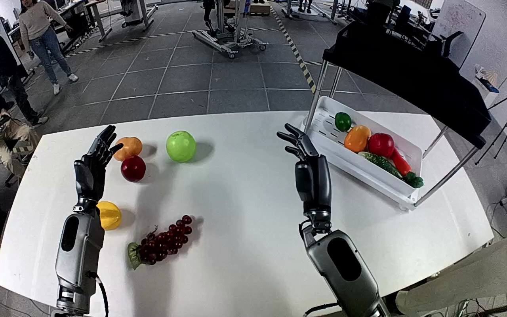

NVIDIA GR1 · 55
Video 55

Visual review action_review.json
{
"prompt_protocol": "humanoid_action_v1",
"prompt_provenance": "visually_authored_from_video_and_initial_frame",
"reviewed_contact_sheets": [
"sheet_001.jpg"
],
"inspected_frame_stride": 2,
"inspected_sampled_frame_count": 60,
"initial_scene": "Egocentric view over the robot’s two forearms and open dexterous hands toward a white table. A dark red bunch of grapes with a green leaf lies near the front-left portion of the table; a white lower tray with other produce sits beneath a black shelf to the robot’s right.",
"observed_sequence": [
{
"start_frame": 0,
"end_frame": 16,
"action": "Both hands remain open above the table; grapes lie on the tabletop and the lower white shelf tray contains other produce.",
"confidence": "high"
},
{
"start_frame": 17,
"end_frame": 48,
"action": "Right arm reaches inward and leftward toward the grape bunch, positioning open fingers around its right end while the left hand remains raised and uninvolved.",
"confidence": "high"
},
{
"start_frame": 49,
"end_frame": 64,
"action": "Right fingers close around the bunch; the bunch pivots from its flat tabletop orientation into the grasp.",
"confidence": "high"
},
{
"start_frame": 65,
"end_frame": 78,
"action": "Right hand lifts the grapes clear of the tabletop, with a visible leaf extending from the bunch. Left hand supplies no support.",
"confidence": "high"
},
{
"start_frame": 79,
"end_frame": 100,
"action": "Right arm carries the held bunch rightward above the white lower tray beneath the black shelf.",
"confidence": "high"
},
{
"start_frame": 101,
"end_frame": 114,
"action": "Right hand lowers and holds the bunch over the tray beside existing produce; the hand partly occludes the bunch and tray contact.",
"confidence": "high"
},
{
"start_frame": 115,
"end_frame": 119,
"action": "Right fingers open and the bunch descends relative to the hand into the tray beside the red round object and orange elongated produce. The right hand remains immediately above the deposited grapes; no subsequent retreat is shown.",
"confidence": "high for finger opening and grapes descending into tray; moderate for exact support contact"
}
],
"arm_hand_roles": {
"right": "Sole manipulating hand: grasps the grape bunch, lifts and transports it, lowers it into the white tray, and opens its fingers over the deposited bunch.",
"left": "Remains open and raised over the left part of the table; does not touch, stabilize, support, or receive the grapes.",
"coordination": "Single-hand manipulation without hand-to-hand transfer or assistance from the left hand."
},
"anatomical_side_evidence": "The view looks forward from the robot over paired forearms emerging from its lower-left and lower-right body sides. The active arm remains attached to the robot-right origin at lower right while reaching across the body; its medial thumb faces toward the opposite hand. This egocentric body-side and thumb evidence identifies it as anatomical right, rather than merely relying on the object’s image position.",
"terminal_state": "The grape bunch is in the shelf’s lower white tray among other produce. The right hand has opened above the bunch and remains close to it; the left hand stays open and uninvolved. No retreat after placement is visible.",
"uncertainties": [
"The right palm, the black shelf edge, and other produce partly occlude the exact final finger-to-grape and grape-to-tray contact points. Finger opening and the bunch descending into the tray are visible; no later hand withdrawal is observed."
],
"annotation_discrepancies": [],
"evidence_frame_indices": [
0,
48,
62,
72,
96,
110,
114,
118,
119
],
"selected_execution_status": "success",
"video_id": "55",
"dataset": "NVIDIA_GR1_100",
"dedicated_review_agent": "review_gr1_55",
"review_source_video": "NVIDIA_GR1_100/55/original/original.mp4",
"source_frame_count": 120,
"source_fps": 20.0,
"native_detail_frames": [
48,
62,
72,
96,
110,
114,
118,
119
],
"world_model_prompt": "The robot closes its right-hand fingers around the bunch of grapes on the table and lifts it off the surface. It carries the bunch to the shelf’s bottom white tray, lowers it among the other produce, and opens its fingers, leaving the grapes in the tray with its hand still above them. Keep the camera fixed; preserve robot geometry, physically valid joint motion, and normal gripper opening and closing.",
"original_task_instruction": "Use the right hand to pick up grapes from white table left side to bottom level of shelf.",
"selected_segment": {
"start_frame": 0,
"end_frame_exclusive": 120,
"reason": "Complete original single-task reference; no cropping or trimming requested."
},
"source_video_sha256": "4e4590a6aa009dff0f9bac6995ca56fa72e4bc1d76d33cd6072859a92cc1e7c1",
"review_completed_at": "2026-10-13T18:14:26.850412+00:00"
}